Devlog Twenty One Overview
I love this devlog update. The player is now finally able to actually plant and grow the crops in the game. This will make food gathering a lot easier, that's for sure. It'll also help enhance the survival bit of the game; actually having to gather and grow foods.
Main Features
There's a huge feature in this devlog update. But I'm going to seperate it into smaller sections: planting crops, growing crops, and harvesting crops. So I'll talk about these topics in a little detail.
To be able to plant crops, the player must be holding a plantable crop. Something like a carrot or potato. And they must be looking at the Farmland block. Then they right click and it'll create a crop.
After a set amount of time, the crops will have a random chance of growing to their next stage. This is only true though if the player is close enough for the crops to grow of course.
When harvesting the crops, if the crop is in it's final growth phase, the player will have a random chance of getting a few more crops from the harvest. I think it was up to four or something. If the crop is still growing, and the player harvests it early, the player will only get back a single crop or the seed variant of the crop. Also here is what the crop fields would look like.
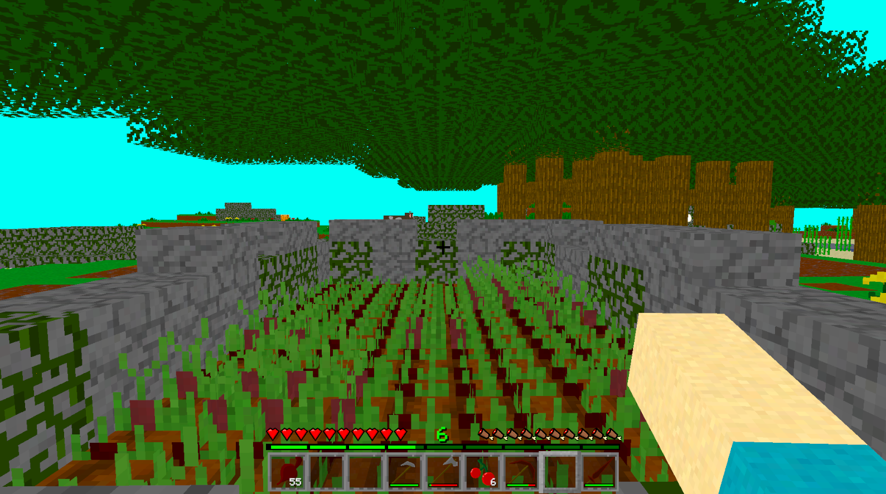
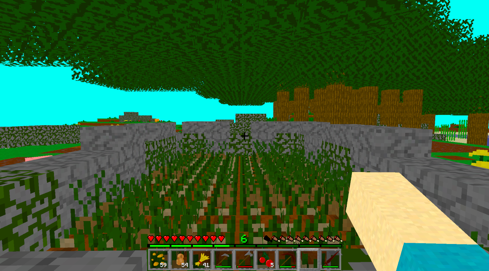
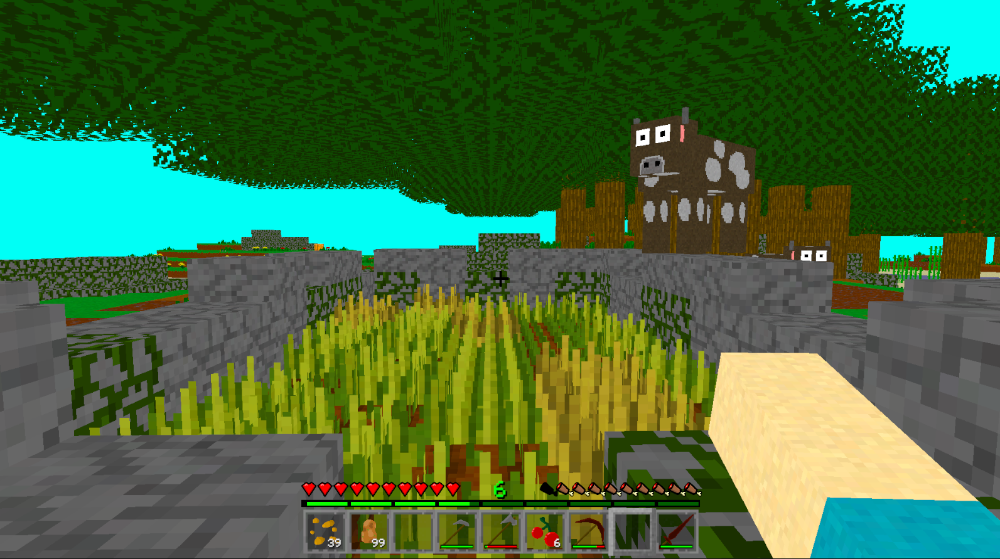
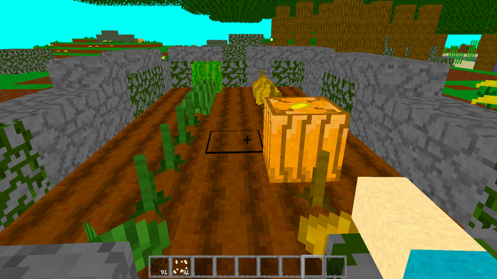
Oh, and I added all the crops as items that can be put into the Composter to be turned into Bonemeal. Just in case this was something the player might be interested in. Also bonemeal can of course be used on crops to speed up their growth.
Now how does the player get all these crops? Because I realized that there was no way for the player to get carrots, potatoes, or beetroots in the game. So I had to fix that. Pigs have a small chance of dropping carrots. Cows have a small chance of dropping potatoes. Because why not, I guess? And carrots, pototoes, and beetroot all have a small chance of dropping from Flowering Grass. My thought is that maybe there's crop seeds in the flowers or something. I don't know. In Minecraft, you get this stuff from chests, or villager fields. But I don't have those yet, so I had to work with what I had.
Now here is two small fixes to the game. Firstly, I gave Shears a lot more durability. I found that they were just getting destroyed way too quickly. Secondly, I fixed a rendering problem I had with non-block shapes. You may have noticed some of the non-block items in the game looked weird or were missing a face entirely when up against a full block. Well, this has been fixed now. I'll see if I can get some before and after pictures of what I'm talking about.
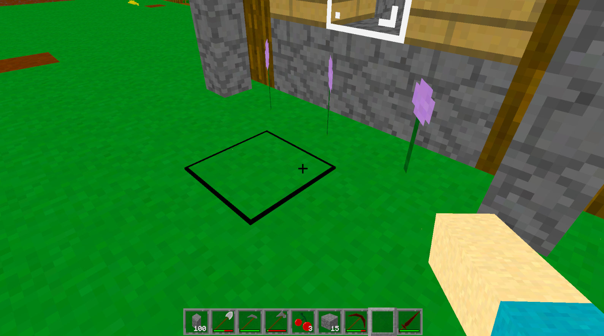
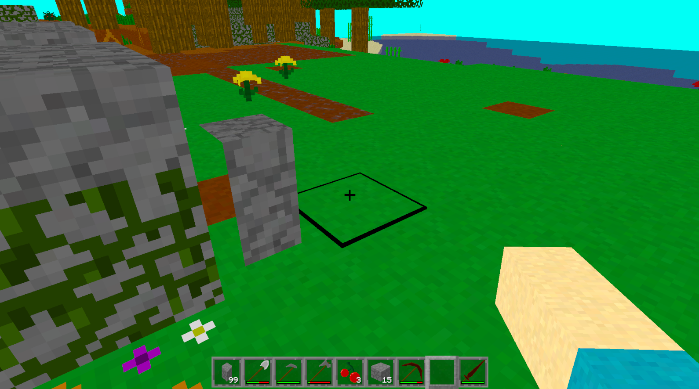
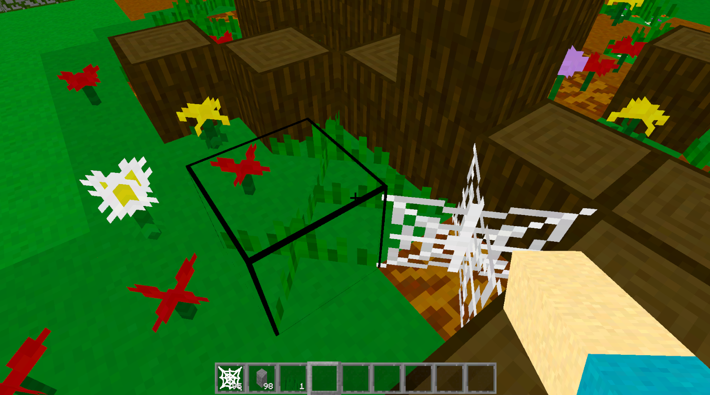
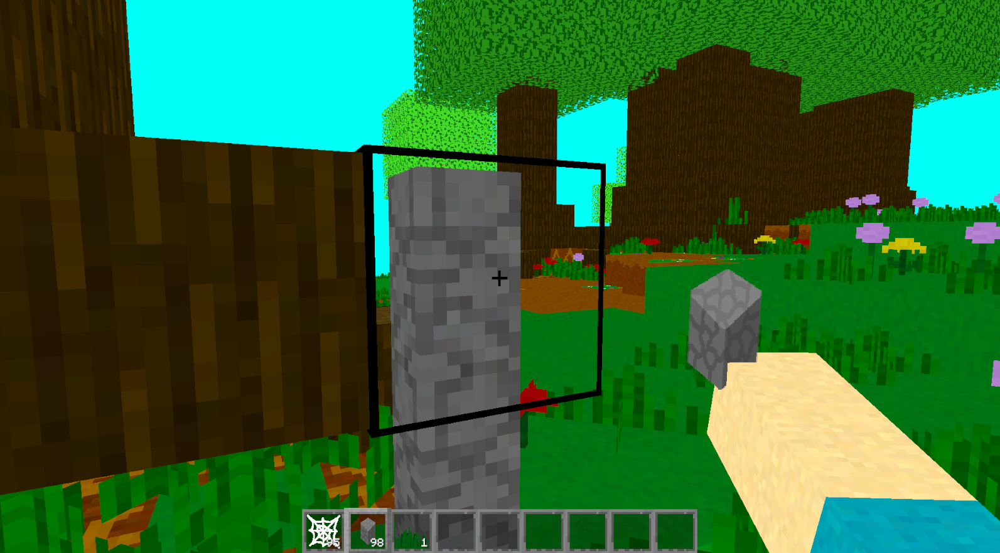
Blocks
This devlog update just has a bunch of crop blocks. I'll show off all the different stages for the crops. Because of how I'm doing stuff, the watermelon and pumpkin crops are a little weird, but eh. I think I did alright with what I was capable of. And hopefully you can guess which crops are which.
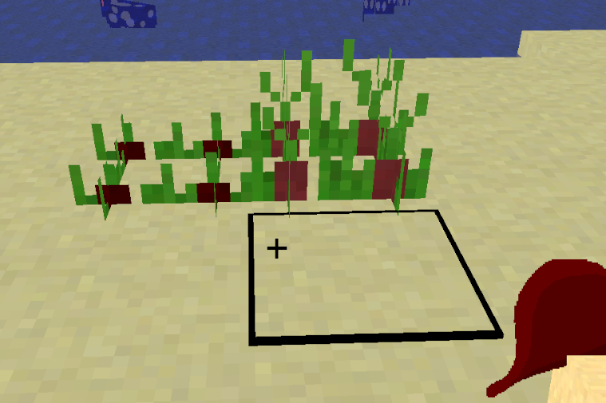
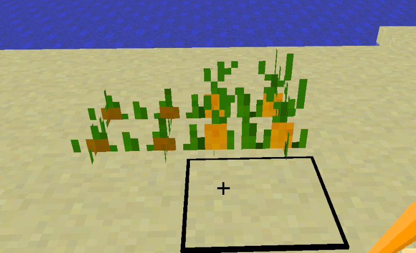
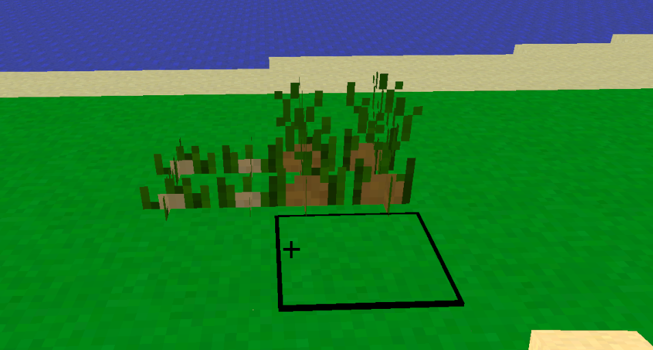
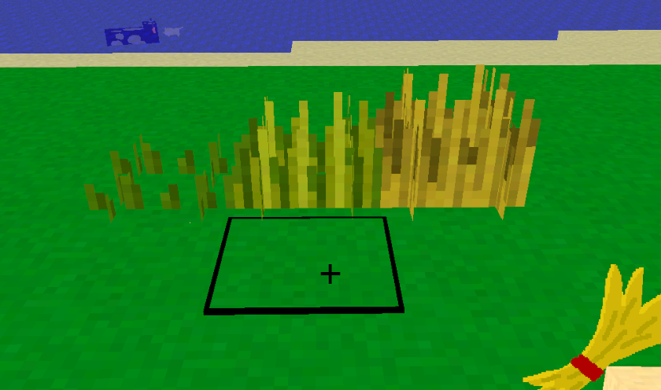
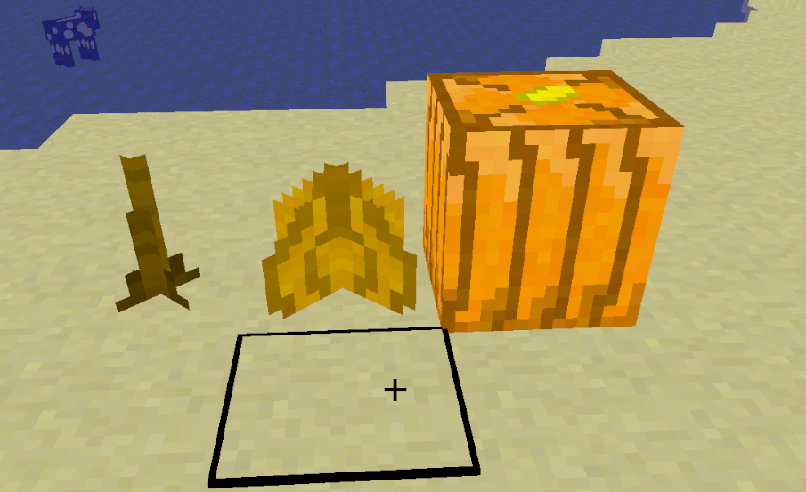
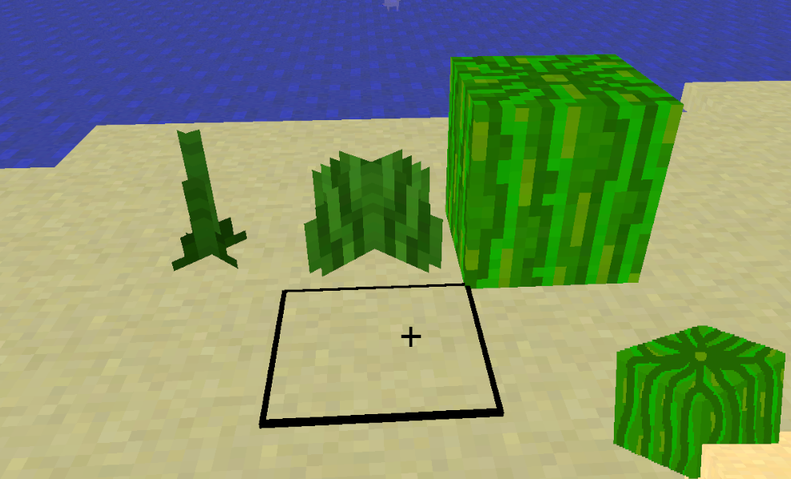
Conclusion
Somehow with the addition of being able to grow and harvest food, I feel like the game has gotten dramatically closer to being complete. It hasn't, but the feeling is there. Still though, this is a great thing for the game.
Now I have a few ideas for the next devlog. I'm not going to spoil what they are though. There is one idea I'm leaning towards, so I'm really hoping I can get it to work nicely. If I can, then that will be amazing. If not, then I'll work with one of my other ideas. Either way, fan feedback is slowly getting added in and stuff is being worked on to finish the game.